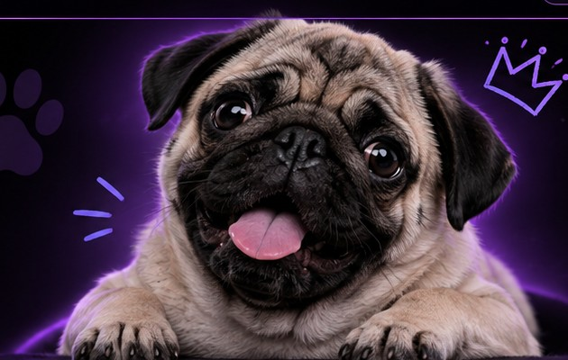
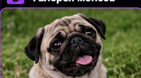
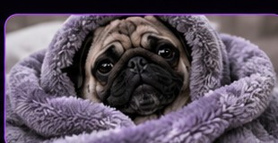
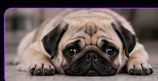
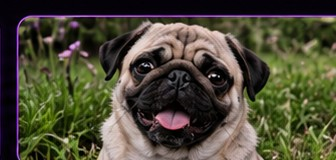
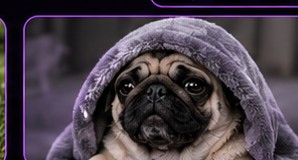

🥰
Характер
Обычно мопсы общительные, ласковые и любят проводить время рядом с людьми.
Познакомься с забавными, ласковыми и очень преданными собаками, которые умеют превращать обычный день в праздник.
Узнать о мопсах ↓
Мопс — небольшая собака-компаньон с выразительными глазами, складочками на мордочке и дружелюбным характером.
Обычно мопсы общительные, ласковые и любят проводить время рядом с людьми.
Игры, короткие прогулки, новые впечатления и уютный отдых рядом с семьёй.
Крепкое компактное тело, короткая мордочка, большие глаза и закрученный хвост.
Несколько ориентиров о породе. У каждой собаки свои особенности.
Мопсам нужна внимательная забота — особенно из-за строения их короткой мордочки.
Аккуратно очищай и хорошо высушивай складки по рекомендации ветеринара. Регулярно вычёсывай шерсть.
Из-за короткой мордочки им бывает трудно охлаждаться. Избегай перегрева и обеспечивай доступ к воде и прохладе.
Подойдут спокойные прогулки и умеренные игры. Следи за дыханием и не заставляй собаку продолжать, если ей тяжело.
Регулярные осмотры помогают следить за дыханием, глазами, кожей, зубами и общим самочувствием.
Пять милых моментов из жизни маленьких хвостатых друзей.





Мопс может стать весёлым и преданным другом. Главное — выбирать ответственное содержание, заботиться о здоровье и помнить, что каждая собака заслуживает любви.
Наверх ↑